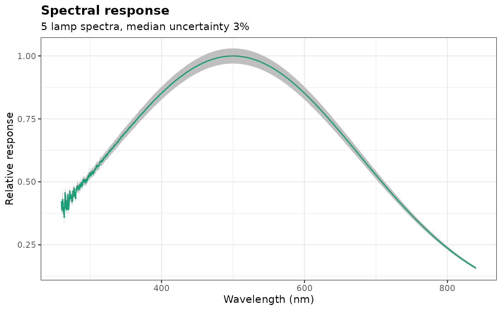

Measures the relative spectral response of an instrument (the
efficiency of the collection optics, fiber, grating and detector at each
wavelength) from spectra of a calibration lamp of known spectral
irradiance or radiance, such as a deuterium-halogen lamp, with its
uncertainty. correct_response() then corrects spectra or line
intensities.
Usage
response_calibration(
lamp,
reference,
dark = NULL,
smooth = 1,
exclude = NULL,
segments = TRUE
)Arguments
- lamp
The spectra of the calibration lamp: a numeric vector named by wavelength, or a matrix or data frame with one spectrum per row and the wavelengths as column names (other columns are ignored). Several spectra are averaged.
- reference
The certified spectral irradiance (or radiance) of the lamp: a data frame with columns
wavelength(nm) andvalue, and optionallyrsd, the relative standard uncertainties of the values (0.03 for 3%).- dark
An optional dark spectrum (or several, averaged) on the same axis as
lamp, subtracted from it.- smooth
The width of the smoothing window, in nm. Default is 1; 0 turns the smoothing off.
- exclude
Wavelength ranges left out of the response and interpolated: a numeric vector of length 2, a list of them, or a two-column matrix. Default is
NULL.- segments
A logical: smooth each detector segment separately (
TRUE, default).
Value
An object of class specproc_response, a list with
response: a tibble with, for each channel in column order, itswavelength, detectorsegment, relativeresponse(NAwithout response), and its relative standard uncertaintyrsd, with the parts from the reference (reference_rsd) and from the measurement (measurement_rsd);n_spectra,smooth,excludeand the wavelengthrangeof the reference.
Use correct_response() to correct spectra or line intensities, and
plot_response() to draw the response.
Details
The response at each channel is the ratio of the measured lamp spectrum
(after subtraction of dark) to the certified irradiance of the lamp,
interpolated at the channel. The certified values, often tabulated every
few nanometers, are interpolated by a monotone cubic spline of their
logarithm; channels outside their range get no response. The ratio is
smoothed by a local linear fit over smooth nm, within each detector
segment when segments = TRUE (the axis is split where the wavelengths
step back or jump, as in wavelength_calibration()), so that the noise
of the lamp spectrum is averaged without biasing the steep edges of the
response. The channels in the exclude ranges, such as the Balmer lines
of a deuterium lamp (486.0 and 656.1 nm) that the certificate leaves
out, are interpolated from their neighbors. The response is scaled to a
maximum of 1.
The relative standard uncertainty of the response (rsd) combines in
quadrature that of the certified values (column rsd of reference,
interpolated linearly) and that of the measurement: with several lamp
spectra, the standard error of their mean response (each spectrum
scaled to a common level first, so that drifts of the lamp output do not
count); with one, the noise of the spectrum (estimated from its
channel-to-channel differences) averaged over the smoothing window.
Certificates often give expanded uncertainties (coverage factor 2):
divide them by 2.
The lamp must be measured through the same optical path as the plasma
(collection optics, fiber, spectrometer settings), and its spectrum
must not be saturated. With a certificate in energy units (W per nm),
the corrected intensities are proportional to the spectral radiance
(energy units, as units = "energy" of boltzmann()).
Examples
# the certified spectral irradiance of a lamp, every 10 nm, known within
# 3% (simulated here as a blackbody at 3100 K)
planck <- function(wl, t) 1 / (wl^5 * (exp(1.4388e7 / (wl * t)) - 1))
reference <- data.frame(wavelength = seq(250, 850, by = 10))
reference$value <- planck(reference$wavelength, 3100)
reference$rsd <- 0.03
# five spectra of the lamp, through an instrument of unknown response
wl <- seq(260, 840, by = 0.1)
true_response <- exp(-((wl - 500) / 250)^2)
set.seed(1)
lamp <- t(replicate(5, 2e4 * true_response * planck(wl, 3100) / planck(500, 3100) +
rnorm(length(wl), sd = 20)))
colnames(lamp) <- wl
response <- response_calibration(lamp, reference)
response
#> Spectral response from 5 lamp spectra (smoothed over 1 nm)
#>
#> Channels: 5801 (260 to 840 nm, 1 segment)
#> Uncertainty: median 3% (3% to 12%); reference 3%, measurement 0.038% (medians)
plot_response(response)
